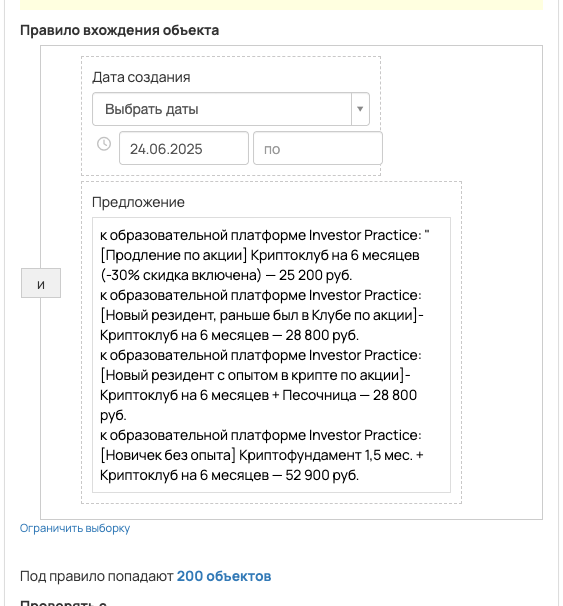
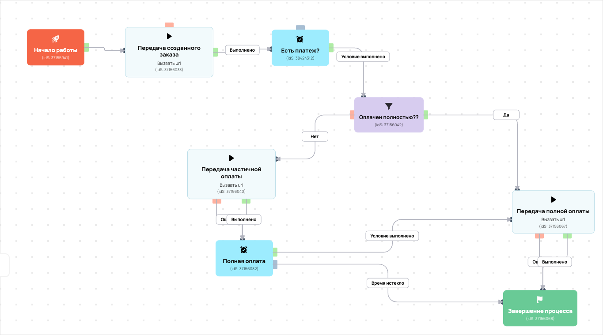

Передача продаж с вебинара
- ID процесса:
2143419 - Объект: Заказы
- Статус: Ожидание событий
Описание из GetCourse
30.06.2026. Подробный ход процесса GetCourse:
Главное: В процесс попадают заказы по правилу: Дата создания (дата: 24.06.2025 - ...) и Предложение (ID: 7315870, 7316245, 7316231, 7315883).
Процесс работает с объектом GetCourse: Заказы. Текущий статус процесса: Ожидание событий.
Как идет процесс внутри GetCourse:
- Схема состоит из 23 блоков и 33 переходов.
Конец подробного хода процесса GetCourse.
30.06.2026. Актуальное описание процесса:
Главное: В процесс попадают заказы по правилу: Дата создания (дата: 24.06.2025 - ...) и Предложение (ID: 7315870, 7316245, 7316231, 7315883).
Процесс работает с объектом GetCourse: Заказы. Текущий статус процесса: Ожидание событий.
Конец актуального описания процесса.
КК передача
Понятное описание процесса
- Процесс работает с объектом GetCourse: Заказы. Текущий статус процесса: Ожидание событий.
- На вход попадают данные так: В процесс попадают заказы по правилу: Дата создания (дата: 24.06.2025 - ...) и Предложение (ID: 7315870, 7316245, 7316231, 7315883).
- Внутри схемы есть дополнительные проверки/ожидания: 3. Основные блоки: «Оплачен полностью??»; «Полная оплата»; «Есть платеж?».
- Дальше процесс делает прямые вызовы Vakas: 3. Напрямую задействованы базы: 80589.
- Передача: 80589. База 80589: Оплаты и заказы. Передаются параметры:
number,id,order_id,positions,costMoney,leftCostMoney,payedMoney,status,paymentLink,firstNameи другие. - Что происходит в amoCRM: На входе в этап КРИПТОКЛУБ -> Новый заказ [76504486] база ищет дубль и может взять старую сделку только из заранее разрешенных этапов.
Ход процесса в GetCourse
- Схема состоит из 23 блоков и 33 переходов.
- По типам: стартов 1, условий/ожиданий 3, вызовов URL 6, изменений полей 6, финалов 1.
Блоки процесса: что делают и зачем нужны:
- Блок
37155941«Начало работы» (старт). Что делает: Запускает выполнение схемы для объекта, который попал под правило входа процесса. Зачем нужен: Нужен как точка входа: от него GetCourse начинает движение объекта по схеме. Дальше: если результат «Выполнено», идет в «Передача созданного заказа». - Блок
37156033«Передача созданного заказа» (вызов URL). Что делает: Передает в Vakas: 80589. База 80589, канал «Оплаты и заказы» (GET); параметры:number,id,order_id,positions,costMoney,leftCostMoney,payedMoney,status,paymentLink,firstName,lastName,name,email,phoneи другие; timeout 300 сек. Зачем нужен: Нужен, чтобы передать подходящий объект в 80589. База 80589; дальше На входе в этап КРИПТОКЛУБ -> Новый заказ [76504486] база ищет дубль и может взять старую сделку только из заранее разрешенных этапов. Дальше: если результат «Ошибка», идет в «n8n fail после Передача созданного заказа #37156033»; если результат «Выполнено», идет в «n8n success после Передача созданного заказа #37156033». - Блок
43525367«n8n success после Передача созданного заказа #37156033» (вызов URL). Что делает: Вызывает внешний URL: testn8n.easydrafting.ru/webhook/gc-vakas-retry-events (POST); параметры:event,clientED,gcDomain,action,process_id,process_name,entity_type,object_id,order_id,user_id,name,email,phone,error_message; timeout 10 сек. Зачем нужен: Нужен, чтобы процесс GetCourse передал данные во внешний сервис testn8n.easydrafting.ru. Дальше: если результат «Ошибка», идет в «error_vakas 0 (копия)»; если результат «Выполнено», идет в «error_vakas 0 (копия)». - Блок
43435500«error_vakas 0 (копия)» (изменение поля). Что делает: меняет полеerror_vakas(Установить равным). значение: 0 Зачем нужен: Нужен, чтобы записать внутри GetCourse технический признак/значение, которое потом используется в передаче или логике ветвления. Дальше: если результат «Выполнено», идет в «Есть платеж?». - Блок
38424312«Есть платеж?» (ожидание условия). Что делает: Останавливает объект в ожидании нужного условия; точная формула в дампе не расшифрована. Зачем нужен: Нужен, чтобы не отправлять объект раньше времени: процесс ждет нужное событие, заказ, сегмент или другое условие. Дальше: если результат «Условие выполнено», идет в «Оплачен полностью??». - Блок
37156042«Оплачен полностью??» (условие). Что делает: Проверяет ветвление «Оплачен полностью??», но текст условия в дампе не расшифрован. Зачем нужен: Нужен, чтобы разделить поток: подходящих пользователей/заказы отправить дальше, неподходящих перевести на другую ветку или завершить. Дальше: если результат «Нет», идет в «Передача частичной оплаты»; если результат «Да», идет в «Передача полной оплаты». - Блок
37156067«Передача полной оплаты» (вызов URL). Что делает: Передает в Vakas: 80589. База 80589, канал «Оплаты и заказы» (GET); параметры:number,id,order_id,positions,costMoney,leftCostMoney,payedMoney,status,paymentLink,firstName,lastName,name,email,phoneи другие; timeout 300 сек. Зачем нужен: Нужен, чтобы передать подходящий объект в 80589. База 80589; дальше На входе в этап КРИПТОКЛУБ -> Новый заказ [76504486] база ищет дубль и может взять старую сделку только из заранее разрешенных этапов. Дальше: если результат «Ошибка», идет в «n8n fail после Передача полной оплаты #37156067»; если результат «Выполнено», идет в «n8n success после Передача полной оплаты #37156067». - Блок
43525371«n8n success после Передача полной оплаты #37156067» (операция). Что делает: Выполняет служебный шаг схемы «n8n success после Передача полной оплаты #37156067». Зачем нужен: Нужен как промежуточный технический шаг в схеме «n8n success после Передача полной оплаты #37156067». Дальше: если результат «Ошибка», идет в «error_vakas 0 (копия) (копия) (копия)»; если результат «Выполнено», идет в «error_vakas 0 (копия) (копия) (копия)». - Блок
43435550«error_vakas 0 (копия) (копия) (копия)» (изменение поля). Что делает: меняет полеerror_vakas(Установить равным). значение: 0 Зачем нужен: Нужен, чтобы записать внутри GetCourse технический признак/значение, которое потом используется в передаче или логике ветвления. Дальше: если результат «Выполнено», идет в «Завершение процесса». - Блок
37156068«Завершение процесса» (завершение). Что делает: Завершает ветку процесса после выполненных проверок и действий. Зачем нужен: Нужен, чтобы закрыть текущую ветку и не гонять объект по процессу повторно. Дальше переходов нет: это конечная точка ветки. - Блок
43525372«n8n fail после Передача полной оплаты #37156067» (операция). Что делает: Выполняет служебный шаг схемы «n8n fail после Передача полной оплаты #37156067». Зачем нужен: Нужен как промежуточный технический шаг в схеме «n8n fail после Передача полной оплаты #37156067». Дальше: если результат «Ошибка», идет в «Оплачен полностью??»; если результат «Выполнено», идет в «Оплачен полностью??». - Блок
37156040«Передача частичной оплаты» (вызов URL). Что делает: Передает в Vakas: 80589. База 80589, канал «Оплаты и заказы» (GET); параметры:number,id,order_id,positions,costMoney,leftCostMoney,payedMoney,status,paymentLink,firstName,lastName,name,email,phoneи другие; timeout 300 сек. Зачем нужен: Нужен, чтобы передать подходящий объект в 80589. База 80589; дальше На входе в этап КРИПТОКЛУБ -> Новый заказ [76504486] база ищет дубль и может взять старую сделку только из заранее разрешенных этапов. Дальше: если результат «Ошибка», идет в «n8n fail после Передача частичной оплаты #37156040»; если результат «Выполнено», идет в «n8n success после Передача частичной оплаты #37156040». - Блок
43525369«n8n success после Передача частичной оплаты #37156040» (вызов URL). Что делает: Вызывает внешний URL: testn8n.easydrafting.ru/webhook/gc-vakas-retry-events (POST); параметры:event,clientED,gcDomain,action,process_id,process_name,entity_type,object_id,order_id,user_id,name,email,phone,error_message; timeout 10 сек. Зачем нужен: Нужен, чтобы процесс GetCourse передал данные во внешний сервис testn8n.easydrafting.ru. Дальше: если результат «Ошибка», идет в «error_vakas 0 (копия) (копия)»; если результат «Выполнено», идет в «error_vakas 0 (копия) (копия)». - Блок
43435544«error_vakas 0 (копия) (копия)» (изменение поля). Что делает: меняет полеerror_vakas(Установить равным). значение: 0 Зачем нужен: Нужен, чтобы записать внутри GetCourse технический признак/значение, которое потом используется в передаче или логике ветвления. Дальше: если результат «Выполнено», идет в «Полная оплата». - Блок
37156082«Полная оплата» (ожидание условия). Что делает: Останавливает объект в ожидании нужного условия; точная формула в дампе не расшифрована. Зачем нужен: Нужен, чтобы не отправлять объект раньше времени: процесс ждет нужное событие, заказ, сегмент или другое условие. Дальше: если результат «Время истекло», идет в «Завершение процесса»; если результат «Условие выполнено», идет в «Передача полной оплаты». - Блок
43525370«n8n fail после Передача частичной оплаты #37156040» (операция). Что делает: Выполняет служебный шаг схемы «n8n fail после Передача частичной оплаты #37156040». Зачем нужен: Нужен как промежуточный технический шаг в схеме «n8n fail после Передача частичной оплаты #37156040». Дальше: если результат «Ошибка», идет в «Оплачен полностью??»; если результат «Выполнено», идет в «Оплачен полностью??». - Блок
43525368«n8n fail после Передача созданного заказа #37156033» (вызов URL). Что делает: Вызывает внешний URL: testn8n.easydrafting.ru/webhook/gc-vakas-retry-events (POST); параметры:event,clientED,gcDomain,action,process_id,process_name,entity_type,object_id,order_id,user_id,name,email,phone,error_message; timeout 10 сек. Зачем нужен: Нужен, чтобы процесс GetCourse передал данные во внешний сервис testn8n.easydrafting.ru. Дальше: если результат «Ошибка», идет в «Начало работы»; если результат «Выполнено», идет в «Начало работы». - Блок
43435498«error_vakas 1 (копия)» (изменение поля). Что делает: меняет полеerror_vakas(Установить равным). значение: 1 Зачем нужен: Нужен, чтобы записать внутри GetCourse технический признак/значение, которое потом используется в передаче или логике ветвления. Дальше: если результат «Выполнено», идет в «Задержка (копия)». - Блок
43435499«Задержка (копия)» (таймер). Что делает: Делает паузу или ждет заданное время перед следующим шагом. Зачем нужен: Нужен для задержки между проверкой и передачей, чтобы данные успели появиться или чтобы соблюсти нужный порядок обработки. Дальше: если результат «Выполнено», идет в «Начало работы». - Блок
43435509«error_vakas 1 (копия) (копия)» (изменение поля). Что делает: меняет полеerror_vakas(Установить равным). значение: 1 Зачем нужен: Нужен, чтобы записать внутри GetCourse технический признак/значение, которое потом используется в передаче или логике ветвления. Дальше: если результат «Выполнено», идет в «Задержка (копия) (копия)». - Блок
43435510«Задержка (копия) (копия)» (таймер). Что делает: Делает паузу или ждет заданное время перед следующим шагом. Зачем нужен: Нужен для задержки между проверкой и передачей, чтобы данные успели появиться или чтобы соблюсти нужный порядок обработки. Дальше: если результат «Выполнено», идет в «Оплачен полностью??». - Блок
43435520«error_vakas 1 (копия) (копия)» (изменение поля). Что делает: меняет полеerror_vakas(Установить равным). значение: 1 Зачем нужен: Нужен, чтобы записать внутри GetCourse технический признак/значение, которое потом используется в передаче или логике ветвления. Дальше: если результат «Выполнено», идет в «Задержка (копия) (копия)». - Блок
43435521«Задержка (копия) (копия)» (таймер). Что делает: Делает паузу или ждет заданное время перед следующим шагом. Зачем нужен: Нужен для задержки между проверкой и передачей, чтобы данные успели появиться или чтобы соблюсти нужный порядок обработки. Дальше: если результат «Выполнено», идет в «Оплачен полностью??».
Скриншоты процесса


Откуда: процесс берет заказы с отбором по дате создания; создан с 24.06.2025. Полное правило показано на скриншоте ниже.
Что проверяет по пути: Оплачен полностью??, Полная оплата, Есть платеж?.
Куда ведет: вызывает внешние URL: Передача созданного заказа, Передача частичной оплаты, Передача полной оплаты; ждет выполнения условий: Полная оплата, Есть платеж?.
Логика Vakas и amoCRM
- Условие входа в процесс: Дата создания (дата: 24.06.2025 - ...) и Предложение (ID: 7315870, 7316245, 7316231, 7315883).
- Вызовов Vakas в схеме:
3. Уникальных URL Vakas:1. Связанных баз:1.
Связанная база Vakas: 80589. База 80589
- Использование в процессе: Оплаты и заказы
- Документация базы: 80589. База 80589
- Страница настройки: Vakas
- Поиск дублей: Проверять на дубли
- Искать только в выбранных воронках: 14
- Ответственный по контакту имеет приоритет: Да
Вызовы из процесса
payments: Передача созданного заказа / Передача частичной оплаты / Передача полной оплаты
- Endpoint:
payments - URL вызова:
https://vakas-tools.ru/base/payments/8927217/80589/?number={object.number}&id={object.user.id}&order_id={object.id}&positions={object.positions}&costMoney={object.cost_money}&leftCostMoney={object.left_cost_money}&payedMoney={object.payed_money}&status={object.status}&paymentLink={object.payment_link}&firstName={object.user.first_name}&lastName={object.user.last_name}&name={object.user.name}&email={object.user.email}&phone={object.user.phone}&manager_name={object.manager}&manager_email={object.manager_email}&manager_phone={object.manager_phone}&offers={object.offers}&avatarUrl={object.user.avatar_url}&utmS={object.user.create_session.utm_source}&utmM={object.user.create_session.utm_medium}&utmCa={object.user.create_session.utm_campaign}&utmCo={object.user.create_session.utm_content}&utmT={object.user.create_session.utm_term} - Связанная база Vakas: 80589. База 80589
- В схеме этот же URL вызывается из блоков:
Передача созданного заказа,Передача частичной оплаты,Передача полной оплаты
Когда срабатывает в процессе
- Блок
Передача созданного заказа, сценарий 1:Начало работы--Выполнено-->Передача созданного заказа - Блок
Передача созданного заказа, сценарий 2:error_vakas 1 (копия)--Выполнено-->Задержка (копия)--Выполнено-->Начало работы--Выполнено-->Передача созданного заказа- таймер
Задержка (копия)->Выполнено
- таймер
- Блок
Передача частичной оплаты, сценарий 1:Начало работы--Выполнено-->Передача созданного заказа--Выполнено-->n8n success после Передача созданного заказа #37156033--Ошибка-->error_vakas 0 (копия)--Выполнено-->Есть платеж?--Условие выполнено-->Оплачен полностью??--Нет-->Передача частичной оплаты- ожидание
Есть платеж?: условие ожидания без текстовой расшифровки ->Условие выполнено - условие
Оплачен полностью??: условие без текстовой расшифровки ->Нет
- ожидание
- Блок
Передача частичной оплаты, сценарий 2:Начало работы--Выполнено-->Передача созданного заказа--Выполнено-->n8n success после Передача созданного заказа #37156033--Выполнено-->error_vakas 0 (копия)--Выполнено-->Есть платеж?--Условие выполнено-->Оплачен полностью??--Нет-->Передача частичной оплаты- ожидание
Есть платеж?: условие ожидания без текстовой расшифровки ->Условие выполнено - условие
Оплачен полностью??: условие без текстовой расшифровки ->Нет
- ожидание
- Блок
Передача частичной оплаты, сценарий 3:error_vakas 1 (копия)--Выполнено-->Задержка (копия)--Выполнено-->Начало работы--Выполнено-->Передача созданного заказа--Выполнено-->n8n success после Передача созданного заказа #37156033--Ошибка-->error_vakas 0 (копия)--Выполнено-->Есть платеж?--Условие выполнено-->Оплачен полностью??--Нет-->Передача частичной оплаты- таймер
Задержка (копия)->Выполнено - ожидание
Есть платеж?: условие ожидания без текстовой расшифровки ->Условие выполнено - условие
Оплачен полностью??: условие без текстовой расшифровки ->Нет
- таймер
- Блок
Передача частичной оплаты, сценарий 4:error_vakas 1 (копия)--Выполнено-->Задержка (копия)--Выполнено-->Начало работы--Выполнено-->Передача созданного заказа--Выполнено-->n8n success после Передача созданного заказа #37156033--Выполнено-->error_vakas 0 (копия)--Выполнено-->Есть платеж?--Условие выполнено-->Оплачен полностью??--Нет-->Передача частичной оплаты- таймер
Задержка (копия)->Выполнено - ожидание
Есть платеж?: условие ожидания без текстовой расшифровки ->Условие выполнено - условие
Оплачен полностью??: условие без текстовой расшифровки ->Нет
- таймер
- Блок
Передача частичной оплаты, сценарий 5:error_vakas 1 (копия) (копия)--Выполнено-->Задержка (копия) (копия)--Выполнено-->Оплачен полностью??--Нет-->Передача частичной оплаты- таймер
Задержка (копия) (копия)->Выполнено - условие
Оплачен полностью??: условие без текстовой расшифровки ->Нет
- таймер
- Блок
Передача частичной оплаты, сценарий 6:error_vakas 1 (копия) (копия)--Выполнено-->Задержка (копия) (копия)--Выполнено-->Оплачен полностью??--Нет-->Передача частичной оплаты- таймер
Задержка (копия) (копия)->Выполнено - условие
Оплачен полностью??: условие без текстовой расшифровки ->Нет
- таймер
- Блок
Передача полной оплаты, сценарий 1:Начало работы--Выполнено-->Передача созданного заказа--Выполнено-->n8n success после Передача созданного заказа #37156033--Ошибка-->error_vakas 0 (копия)--Выполнено-->Есть платеж?--Условие выполнено-->Оплачен полностью??--Нет-->Передача частичной оплаты--Выполнено-->n8n success после Передача частичной оплаты #37156040--Ошибка-->error_vakas 0 (копия) (копия)--Выполнено-->Полная оплата--Условие выполнено-->Передача полной оплаты- ожидание
Есть платеж?: условие ожидания без текстовой расшифровки ->Условие выполнено - условие
Оплачен полностью??: условие без текстовой расшифровки ->Нет - ожидание
Полная оплата: условие ожидания без текстовой расшифровки ->Условие выполнено
- ожидание
- Блок
Передача полной оплаты, сценарий 2:Начало работы--Выполнено-->Передача созданного заказа--Выполнено-->n8n success после Передача созданного заказа #37156033--Ошибка-->error_vakas 0 (копия)--Выполнено-->Есть платеж?--Условие выполнено-->Оплачен полностью??--Нет-->Передача частичной оплаты--Выполнено-->n8n success после Передача частичной оплаты #37156040--Выполнено-->error_vakas 0 (копия) (копия)--Выполнено-->Полная оплата--Условие выполнено-->Передача полной оплаты- ожидание
Есть платеж?: условие ожидания без текстовой расшифровки ->Условие выполнено - условие
Оплачен полностью??: условие без текстовой расшифровки ->Нет - ожидание
Полная оплата: условие ожидания без текстовой расшифровки ->Условие выполнено
- ожидание
- Блок
Передача полной оплаты, сценарий 3:Начало работы--Выполнено-->Передача созданного заказа--Выполнено-->n8n success после Передача созданного заказа #37156033--Ошибка-->error_vakas 0 (копия)--Выполнено-->Есть платеж?--Условие выполнено-->Оплачен полностью??--Да-->Передача полной оплаты- ожидание
Есть платеж?: условие ожидания без текстовой расшифровки ->Условие выполнено - условие
Оплачен полностью??: условие без текстовой расшифровки ->Да
- ожидание
- Блок
Передача полной оплаты, сценарий 4:Начало работы--Выполнено-->Передача созданного заказа--Выполнено-->n8n success после Передача созданного заказа #37156033--Выполнено-->error_vakas 0 (копия)--Выполнено-->Есть платеж?--Условие выполнено-->Оплачен полностью??--Нет-->Передача частичной оплаты--Выполнено-->n8n success после Передача частичной оплаты #37156040--Ошибка-->error_vakas 0 (копия) (копия)--Выполнено-->Полная оплата--Условие выполнено-->Передача полной оплаты- ожидание
Есть платеж?: условие ожидания без текстовой расшифровки ->Условие выполнено - условие
Оплачен полностью??: условие без текстовой расшифровки ->Нет - ожидание
Полная оплата: условие ожидания без текстовой расшифровки ->Условие выполнено
- ожидание
- Блок
Передача полной оплаты, сценарий 5:Начало работы--Выполнено-->Передача созданного заказа--Выполнено-->n8n success после Передача созданного заказа #37156033--Выполнено-->error_vakas 0 (копия)--Выполнено-->Есть платеж?--Условие выполнено-->Оплачен полностью??--Нет-->Передача частичной оплаты--Выполнено-->n8n success после Передача частичной оплаты #37156040--Выполнено-->error_vakas 0 (копия) (копия)--Выполнено-->Полная оплата--Условие выполнено-->Передача полной оплаты- ожидание
Есть платеж?: условие ожидания без текстовой расшифровки ->Условие выполнено - условие
Оплачен полностью??: условие без текстовой расшифровки ->Нет - ожидание
Полная оплата: условие ожидания без текстовой расшифровки ->Условие выполнено
- ожидание
- Блок
Передача полной оплаты, сценарий 6:Начало работы--Выполнено-->Передача созданного заказа--Выполнено-->n8n success после Передача созданного заказа #37156033--Выполнено-->error_vakas 0 (копия)--Выполнено-->Есть платеж?--Условие выполнено-->Оплачен полностью??--Да-->Передача полной оплаты- ожидание
Есть платеж?: условие ожидания без текстовой расшифровки ->Условие выполнено - условие
Оплачен полностью??: условие без текстовой расшифровки ->Да
- ожидание
- Блок
Передача полной оплаты, сценарий 7:error_vakas 1 (копия)--Выполнено-->Задержка (копия)--Выполнено-->Начало работы--Выполнено-->Передача созданного заказа--Выполнено-->n8n success после Передача созданного заказа #37156033--Ошибка-->error_vakas 0 (копия)--Выполнено-->Есть платеж?--Условие выполнено-->Оплачен полностью??--Нет-->Передача частичной оплаты--Выполнено-->n8n success после Передача частичной оплаты #37156040--Ошибка-->error_vakas 0 (копия) (копия)--Выполнено-->Полная оплата--Условие выполнено-->Передача полной оплаты- таймер
Задержка (копия)->Выполнено - ожидание
Есть платеж?: условие ожидания без текстовой расшифровки ->Условие выполнено - условие
Оплачен полностью??: условие без текстовой расшифровки ->Нет - ожидание
Полная оплата: условие ожидания без текстовой расшифровки ->Условие выполнено
- таймер
- Блок
Передача полной оплаты, сценарий 8:error_vakas 1 (копия)--Выполнено-->Задержка (копия)--Выполнено-->Начало работы--Выполнено-->Передача созданного заказа--Выполнено-->n8n success после Передача созданного заказа #37156033--Ошибка-->error_vakas 0 (копия)--Выполнено-->Есть платеж?--Условие выполнено-->Оплачен полностью??--Нет-->Передача частичной оплаты--Выполнено-->n8n success после Передача частичной оплаты #37156040--Выполнено-->error_vakas 0 (копия) (копия)--Выполнено-->Полная оплата--Условие выполнено-->Передача полной оплаты- таймер
Задержка (копия)->Выполнено - ожидание
Есть платеж?: условие ожидания без текстовой расшифровки ->Условие выполнено - условие
Оплачен полностью??: условие без текстовой расшифровки ->Нет - ожидание
Полная оплата: условие ожидания без текстовой расшифровки ->Условие выполнено
- таймер
Что уходит в Vakas
<details> <summary>Показать 24 параметров запроса</summary>
numberidorder_idpositionscostMoneyleftCostMoneypayedMoneystatuspaymentLinkfirstNamelastNamenameemailphonemanager_namemanager_emailmanager_phoneoffersavatarUrlutmSutmMutmCautmCoutmT
</details>
Как база обработает вызов и что будет в amoCRM
-
Логика создания сделки: сначала ищется существующая сделка/контакт по правилам базы; если подходящая сделка найдена, обновляется она, иначе создается новая.
-
Режим проверки дублей: Проверять на дубли
-
Искать дубль только в выбранных воронках: 14 шт.
-
Учитывать закрытые этапы при поиске дубля: нет
-
Добавлять телефон/email в найденный контакт: Нет
-
Менять имя контакта при обновлении: Нет <details> <summary>Показать 14 воронок для поиска дублей</summary>
-
ОСНОВНОЙ ОТДЕЛ - ЗАЯВКИ [6777466] -
ПАССИВНЫЙ ДОХОД [9426954] -
КРИПТОКАПИТАЛ [9498394] -
ФИНАНСОВАЯ СВОБОДА [9498398] -
ОД [9839030] -
КРИПТОКЛУБ [9578374] -
ИНВЕСТ КЛУБ [9500418] -
ОТДЕЛ КЛУБОВ [6869966] -
АПСЕЙЛЫ ОП [8910882] -
ОТДЕЛ ДИАГНОСТИК [6844390] -
ЛИДОРУБЫ [9212986] -
ДИАГНОСТЫ [9213518] -
ЛИДОРУБЫ(Оплаченные) [9692046] -
ЛИДОРУБЫ(Обновленная) [9692054]
</details>
- Автоотправка оплат в amoCRM: Да
- Базовый этап для этого вызова: определяется по типу оплаты
- Новый заказ: КРИПТОКЛУБ -> Новый заказ [76504486]
- Частичная оплата: КРИПТОКЛУБ -> частично оплачен [77796306]
- Полная оплата: [В той воронке где находится лид] - Успешно реализовано [-142]
- Поле amoCRM для суммы: оплачено[payedMoney]
- Двигать старые сделки только с выбранных этапов: Да
- Этапы, из которых разрешен сдвиг: 104 этапов
- Не менять этап при обновлении: Нет
- Менять название сделки при обновлении: Нет
- Теги сделки: запуск_кк_июнь2025
- Ответственный по умолчанию: Максим Хоруженко[12235050]
- Индивидуальные правила маршрутизации: нет